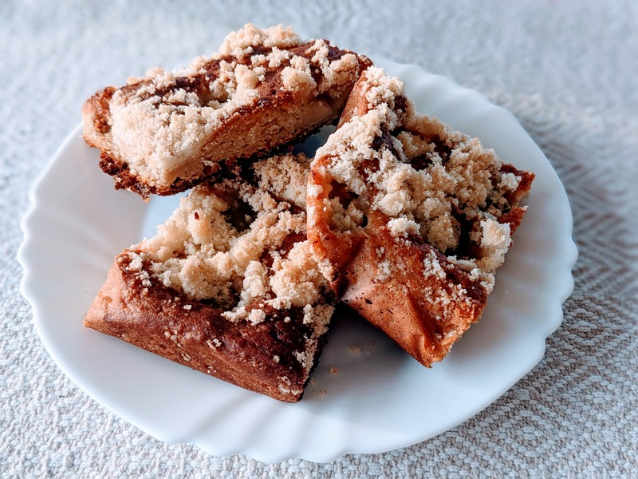

Po dlouhé době sázení na jistotu jsem se zase odhodlala k nějakým kuchařským experimentům a oprášila prehistorické číslo časopisu F.O.O.D. a s ním tento recept na litý koláč jako od babičky. Většinou mě takové klasické recepty moc nelákají, protože hraju o čas, ale tentokrát jsem se nenechala odradit delší dobou přípravy a výsledek se myslím docela povedl :-)
- 500g hladké mouky a špetka soli
- 50 g krupicového cukru
- 50g rozpuštěného másla
- 2 lžíce sádla
- 2 vejce
- 21g droždí
- 500ml vlažného mléka
- ovoce podle sezony(já dala rebarboru, co jsem si přivezla od tchánovců :-)
Z části vlahého mléka, cukru a droždí necháme vzejít kvásek. V míse utřeme sádlo, vejce a cukr, přidáme zbytek mléka a kvásek, mouku a přilijeme máslo tak, aby vzniklo řídké těsto. Zakryjeme čistou utěrkou a necháme asi hodinu kynout. Potom jej vlijeme na plech pokrytý pečicím papírem a rozetřeme na tenkou vrstvu. Posypeme ovocem a poté drobenkou, na kterou budeme potřebovat:
- 60g másla
- 60g cukru krupice
- 120g polohrubé nebo hrubé mouky
Pečeme v troubě předehřáté na 180°C, až těsto zpevní a okraje krásně zezlátnou. V naší troubě to trvalo přibližně 50 minut.
